Get started as an IT admin
Last updated October 17th, 2025
This tutorial provides an introduction to the basics of Knox Asset Intelligence and is designed for first-time users of the service. By the end of this tutorial, you will learn how to access the service, register devices through a reseller, enroll devices, and set up and use the dashboard.
Before proceeding with this tutorial, you must meet all the prerequisites listed on the Introduction page. Review these requirements before continuing.
Step 1: Launch Knox Asset Intelligence
Knox Asset Intelligence is included with the Knox Suite - Enterprise Plan. After you sign up for a Knox company account, you can launch this service by signing in to your Knox Admin Portal and clicking Knox Asset Intelligence in the left navigation menu.
Step 2: Register devices to your account
In order to get business insights for your device fleet, your devices must be registered in Knox Asset Intelligence. Registration involves adding managed devices to your Knox company account and approving them for use with the service. There are two ways to register devices:
-
Purchase devices from a Samsung-approved reseller and approve them through the Knox Admin Portal.
-
Use a bulk action to upload your existing devices into the Knox Admin Portal with a CSV file.
If you are uploading your existing devices, you must ensure that they are compatible and running an appropriate Knox version.
Reseller method
If you purchased devices from a Samsung-approved reseller, the reseller will upload your device information directly to your Knox company account during the transaction. After your reseller uploads devices for the first time, you must approve them to use the service. To do this:
-
Go to the Knox Admin Portal’s Devices page.
-
On the UPLOADS tab, locate the Pending reseller upload under the Status column, then click View.
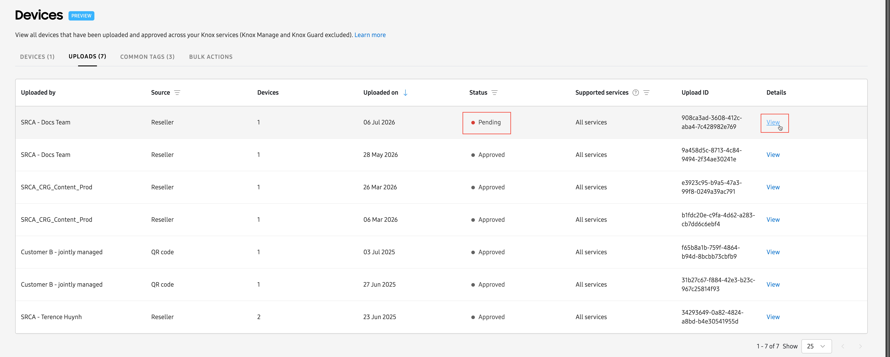
-
On the following page, you’ll see the IMEI numbers included in the upload. Click APPROVE ALL DEVICES, then in the pop-up window, click APPROVE.
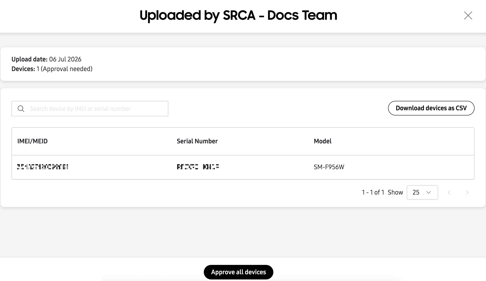
-
After you approve your first reseller upload, you’ll have the option to automatically approve all uploads from this reseller in the future. This can eliminate the need to manually approve devices each time you make a new purchase from this reseller. Click Manage reseller preferences to set up automatic approvals for this reseller, or click Dismiss if you don’t want to set reseller preferences at this time and return to the UPLOADS tab.
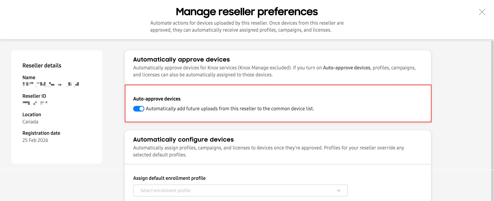
If you don’t enable the automatic approvals option, you will have to manually review and approve each subsequent upload from this reseller.
Bulk upload method
If you have existing managed devices and you want to use them with Knox Asset Intelligence, you can manually upload them to the service by using a CSV file. To do this:
-
Go to the Knox Admin Portal’s Devices page, then click the BULK ACTIONS tab.
-
Click the Knox Asset Intelligence filter button, then click Upload devices.
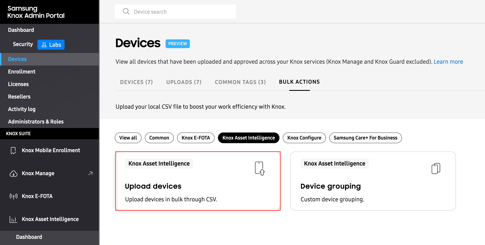
-
Download the provided CSV template, then fill it out with one IMEI number per line (up to 10,000).
-
Import your CSV file, then click SUBMIT. Once devices are imported with a CSV file, they are automatically approved.
Step 3: Enroll your devices
Once devices are registered in your account, they are ready to be enrolled in the Knox Asset Intelligence service. Enrollment primarily involves installing and launching the Knox Asset Intelligence agent (a Managed Google Play app) on a user’s device.
There are two ways to enroll your devices in Knox Asset Intelligence:
-
By using an Enrollment profile. This lets you automatically install the agent when a new or factory-reset device turns on for the first time. This is also known as an out-of-box experience (OOBE) setup.
-
By deploying the agent with an EMM. This lets you install the agent on managed devices already in use, without forcing the user to perform a factory reset.
Review the Enroll devices guide for instructions on each method. Once your devices are enrolled, they will appear on the Devices page with an Active status, and you can start viewing business insights on your Knox Asset Intelligence dashboard.
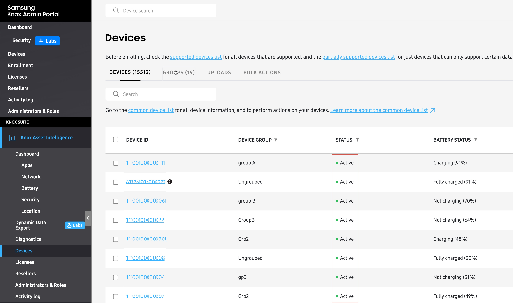
Step 4: Use the Dashboard
The dashboard is your hub for all of your device usage insights. Here is where you’ll find at-a-glance views of your fleet’s status and health, organized into easy-to-use tiles. To launch the dashboard, click Dashboard from the left navigation menu.
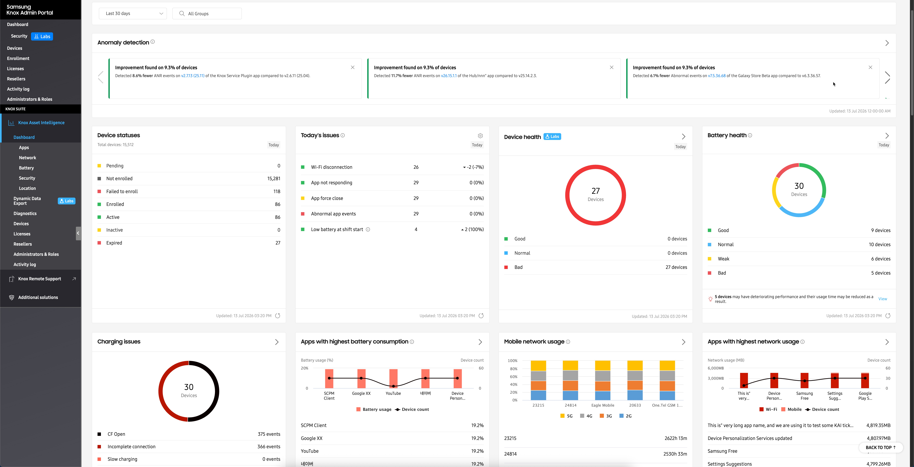
When you open the Knox Asset Intelligence dashboard, you’ll find all of your fleet’s network, apps, and battery insights grouped together, without any additional setup. Use the date selector near the top of the dashboard to set a date range for your data. If data is available for that date range, your tiles will display data accordingly. Note that some insights display a Today tag, indicating that they will always report data for the current day, regardless of the date range selected.
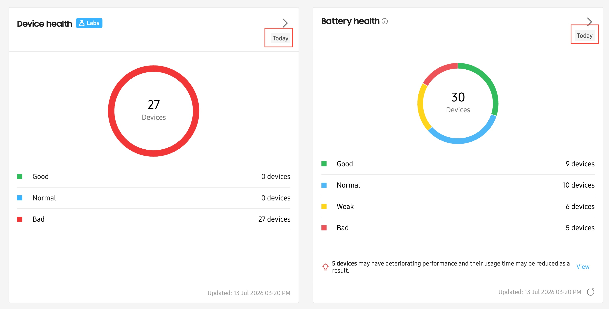
View critical device issues
To help provide a quick summary of your most critical fleet issues, two important insights are placed at the top-left corner of the dashboard:
- Device statuses: This tile summarizes the enrollment status of your devices, letting you quickly see how many total devices you have in the fleet, how many are enrolled, and how many failed enrollment or have expired licenses.
- Today’s issues: This tile shows a summary of problems or events detected across your device fleet for today, helping you quickly identify and respond to emerging issues.
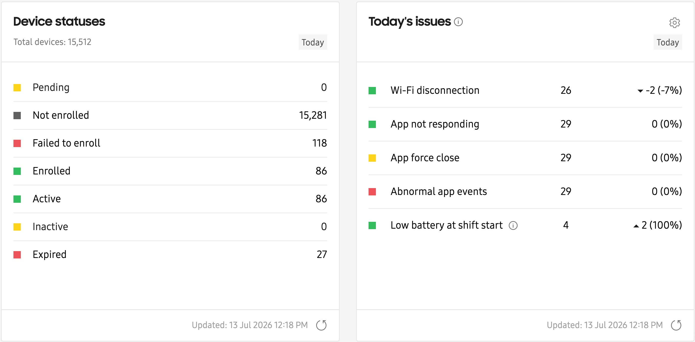
These two insights cannot be removed from the dashboard. For each of the remaining insights, you can move them to any position on the dashboard, letting you view the most critical fleet insights first. To move insight tiles, simply drag and drop them into a new location.

Customize dashboard layout
If you want to customize the dashboard to only display tiles that matter to your organization, you can do so on the dashboard Settings page. To do this:
-
Click Settings in the top-right corner of the Dashboard.
-
Click the CUSTOMIZE tab, then select or clear the tiles that you’re interested in seeing on your main dashboard.
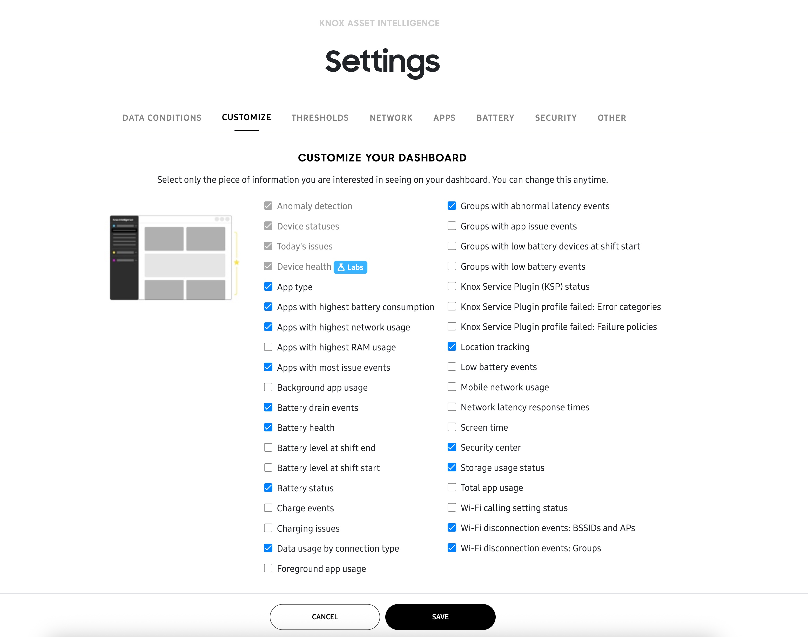
The Device statuses and Today’s issues tiles can’t be removed from the dashboard.
-
Click SAVE to return to the Dashboard page.
Step 5: View business insights
With your dashboard configured, you can now interact with the different tiles to view business insights for your fleet. Most Knox Asset Intelligence insights consist of a “dashboard tile” view that summarizes the insight’s data, as well as an “expanded details” view that helps you analyze critical issues in greater detail.
Some insights provide an additional layer of detail known as the “drill-down” view, which can be accessed from the insight’s expanded details page. Note that every insight has a dashboard tile view, but not every insight has an expanded details or drill-down page. The following section describes the characteristics of the different insight view options.
Dashboard tile view
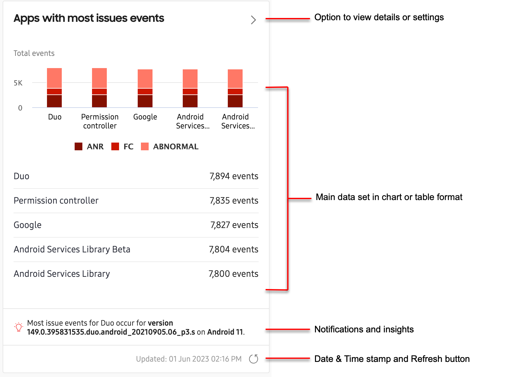
Every dashboard insight consists of a dashboard tile view that summarizes key data in the form of charts, tables, or lists. Some insights like Apps with most issues provide a chart and a list to offer greater detail about the data.
Just below the tile’s main data set, you might see alerts, notifications, or other important information related to your insight. Some dashboard insights like Apps with highest network usage display notifications when critical event thresholds are reached (for example, when apps use more than 100 MB of mobile data per day), while other insights like Total app usage display the top contributor to the insight (for example, the app that was used the most in the fleet).
You can set data thresholds that trigger dashboard notifications in the THRESHOLDS tab of the dashboard Settings page. See Dashboard settings: Thresholds for more information.
Near the bottom-right corner of each tile, you’ll see the date and timestamp of the insight’s last update, and a manual button to request new data. Note that some insights update in real-time, while others update once a day, or once every hour. See Data refresh cycles to learn more about each insight’s data refresh rate.
Expanded details page
To help you analyze critical fleet issues in greater detail, most dashboard tiles provide an “expanded details” view of the insight’s data. If an insight has an expanded details page, you can click the button near the top-right corner of the tile.
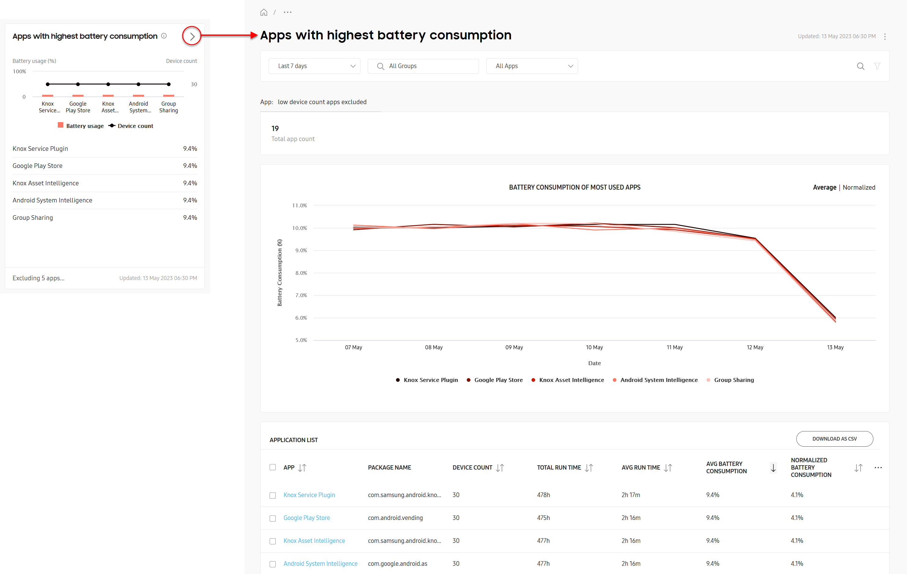
Most insights include a chart of the most critical issues near the top of the expanded details page, and a table detailing all issues near the bottom, while others might just display information in a table (without a chart).
For example, the expanded details page for Apps with highest battery consumption shows the top-five worst performing apps, and their consumed battery power percentage over the selected reporting period. While the chart only displays the top-five worst apps, the table below displays every app that reported excessive battery consumption over the same reporting period.
Some insights allow you to filter the data set to help you focus on key issues first. If the option is available, click the icon near the top-right corner of the page (next to the search bar) to open the filter panel, then specify your parameters and click Apply.
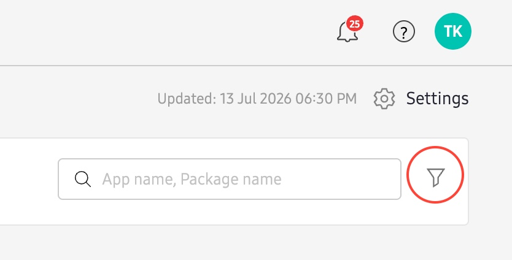
In the expanded details table, you can click the CUSTOMIZE TABLE button ( ) to show or hide table columns. Note that some columns are mandatory and cannot be hidden, and most insights only allow you to display up to seven columns at a time. If the option is available, you can also click DOWNLOAD AS CSV to export the table in CSV format for offline viewing and analysis.
Drill-down page
For some insights, you can get an even deeper analysis of the data by clicking key values in the expanded details table. This “drill-down” view provides additional details not normally found in the insight’s expanded details page.
For example, in the expanded details page table for Apps with highest battery consumption, the key values are the application names in the APP column.
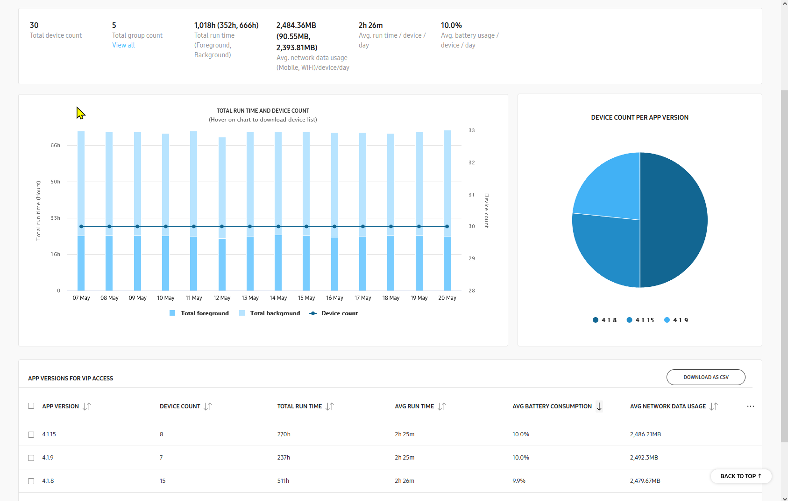
Clicking an application name in the table takes you to a drill-down page for that specific application, letting you see additional details like which versions of the app consumed the most battery power, and how many devices are running each version. This can help you identify if certain versions of an app are causing excessive battery drain, and how many devices might need to have their app versions updated or changed.
Like with the expanded details page, you can also click the CUSTOMIZE TABLE button ( ) to show or hide columns in your table, or download the table as a CSV file for offline viewing and analysis.
Next steps
Now that you know how to launch Knox Asset Intelligence, use the Dashboard, and view business insights, expand your knowledge by reviewing the various how-to guide topics or watching the how-to videos. If you need help or assistance with Knox Asset Intelligence, please reach out to the support team by submitting a support ticket through the Knox Admin Portal.
Recommended reading
The following topics are recommended to help you get the most out of Knox Asset Intelligence:
- Configure your dashboard settings to set up data conditions and thresholds that match your business objectives.
- Request diagnostic logs and snapshots to get device logs and device information to help troubleshoot issues on the device.
- Use the agent to learn about the capabilities of the Knox Asset Intelligence agent, including the ability to view diagnostics information on-device and send device logs to the console.
On this page
Is this page helpful?